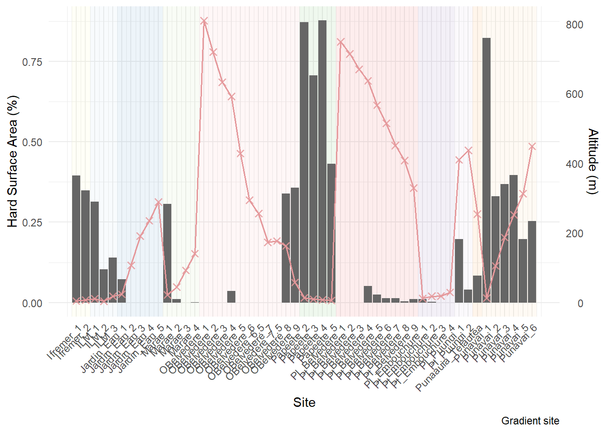
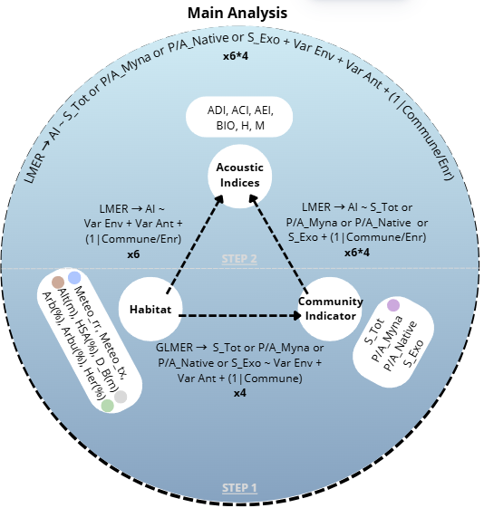
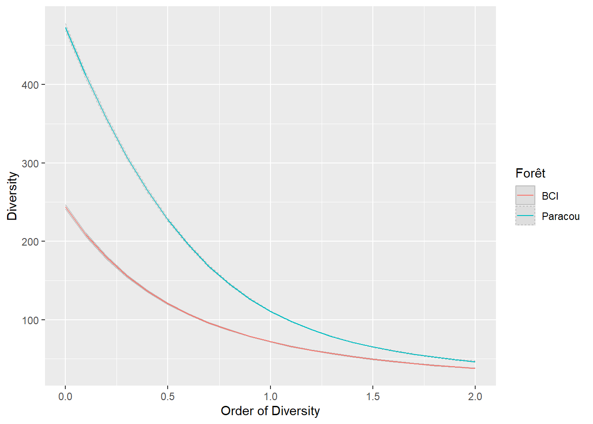

![]()

Demo Stylish Article
Résumé
This document is only a demo explaining how to use the Stylish Article template.
Mots clés
template, demo
1 Introduction
La question de la diversité des forêts tropicales fascine les écologues parce qu’elle a des enjeux très importants (Gibson et al. 2011). est qu’elle est difficile à comprendre (Wright 2002).
A l’heure des menaces sur la biodiversité (Fadrique et al. 2026), une connaissance plus détaillée de la diversité des forêts très étudiées est utile.
Des modèles ont été publiés (Liang et al. 2022).
Comparer la diversité de Paracou (Gourlet-Fleury et al. 2004) et de BCI (Raby 2017).
2 Matériels et Méthodes
Nombre de Hill (Hill 1973)
- Site de Paracou Comparer la diversité de Paracou (Gourlet-Fleury et al. 2004) et de BCI (Raby 2017).
- Site de BCI
- Les analyses sont réalisées avec R (R Core Team 2026) et le package divent (Marcon et Puech under review).
- Site Selection
The sites and data used in this study comes from the work of Emma Pilleboue, who installed temporary acoustic recording unit (ARU) throughout her internship. After installation, the ARU recorded continuously during a period of several days varying between one full day and five full days, between the 15/02/2024 and 02/05/2024.
In totals, 51 sites of Emma’s work are used for this study. The ARU were located at a minimal distance of approximately 200 meters and were in place following altitudinal or urban gradients in some cases. They were also classified into four main habitat type : Urban (4), Suburban (15), Rural (6), Forest(26). The habitats site are mostly forested landscapes or suburban areas, Urban and rural areas are less represented in the site selection.
Acoustic indices selection for better description and tests, use the website to have basic indices described here (Bradfer-Lawrence et al. 2025)

Pattern expectation of selected indices (Sánchez-Giraldo et al. 2021)
- Analysis framework intended

3 Résultats

4 Discussion
MacArthur et Wilson (1967) montrent mathématiquement que la richesse spécifique (le nombre d’espèces) d’une île est un équilibre dynamique entre le taux d’immigration et le taux d’extinction, ce dernier étant directement dicté par la taille de l’île.
BCI est une forêt secondarisée (Raby 2017). Sa diversité pourrait être augmentée selon la théorie de la perturbation intermédiaire (Connell 1978).
Bonus sur la thématique Tahiti_Soundscape
References
Bradfer-Lawrence, Tom, Brad Duthie, Carlos Abrahams, et al. 2025. « The Acoustic Index User’s Guide: A Practical Manual for Defining, Generating and Understanding Current and Future Acoustic Indices ». Methods in Ecology and Evolution 16 (6): 1040‑50. https://doi.org/10.1111/2041-210X.14357.
Connell, Joseph H. 1978. « Diversity in tropical rain forests and coral reefs ». Science 199 (4335): 1302‑10. https://doi.org/10.1126/science.199.4335.1302.
Fadrique, B., F. Costa, F. Cuesta, et al. 2026. « Tree diversity is changing across tropical Andean and Amazonian forests in response to global change ». Nature Ecology & Evolution 10 (2): 267‑80. https://doi.org/10.1038/s41559-025-02956-5.
Gibson, Luke, Tien Ming Lee, Lian Pin Koh, et al. 2011. « Primary forests are irreplaceable for sustaining tropical biodiversity ». Nature 478 (7369): 378‑81. https://doi.org/10.1038/nature10425.
Gourlet-Fleury, Sylvie, Jean Marc Guehl, et Olivier Laroussinie. 2004. Ecology & management of a neotropical rainforest. Lessons drawn from Paracou, a long-term experimental research site in French Guiana. Elsevier.
Hill, M. O. 1973. « Diversity and Evenness: A Unifying Notation and Its Consequences ». Ecology 54 (2): 427‑32. https://doi.org/10.2307/1934352.
Liang, Jingjing, Javier G. P. Gamarra, Nicolas Picard, et al. 2022. « Co-limitation towards lower latitudes shapes global forest diversity gradients ». Nature Ecology & Evolution 6 (août): 1423‑37. https://doi.org/10.1038/s41559-022-01831-x.
MacArthur, Robert H., et Edward O. Wilson. 1967. The theory of island biogeography. Monographs in population biology. Princeton University Press.
Marcon, Eric, et Florence Puech. under review. « divent: an R Package for Diversity Measures Based on Entropy ». Journal of Open Source Software, under review.
R Core Team. 2026. R: A Language and Environment for Statistical Computing. R Foundation for Statistical Computing. https://doi.org/10.32614/R.manuals.
Raby, Megan. 2017. American tropics: the Caribbean roots of biodiversity science. Flows, migrations, et exchanges. The University of North Carolina Press.
Sánchez-Giraldo, Camilo, Camilo Correa Ayram, et Juan M. Daza. 2021. « Environmental sound as a mirror of landscape ecological integrity in monitoring programs ». Perspectives in Ecology and Conservation 19 (3): 319‑28. https://doi.org/10.1016/j.pecon.2021.04.003.
Wright, S. Joseph. 2002. « Plant diversity in tropical forests: a review of mechanisms of species coexistence ». Oecologia 130 (1): 1‑14. https://doi.org/10.1007/s004420100809.